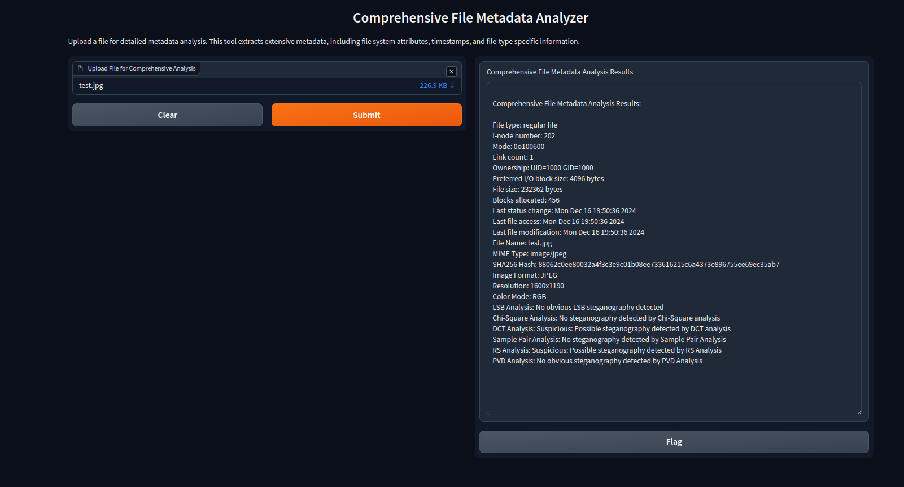
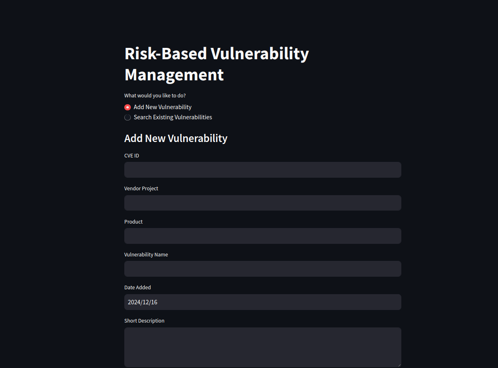
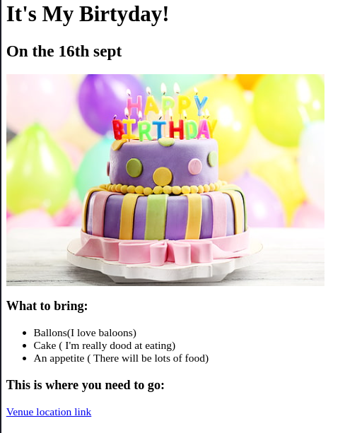

Shanmukha's Portfolio
I'm a Cybersecurity Engineer and a Web Developer
These are some Cybersecurity projects done by me
Meta-data-extractor

risk-based-vulnerebility-management

These are some Web development projects
birthday-project

Contact
About